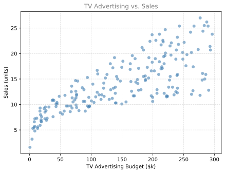
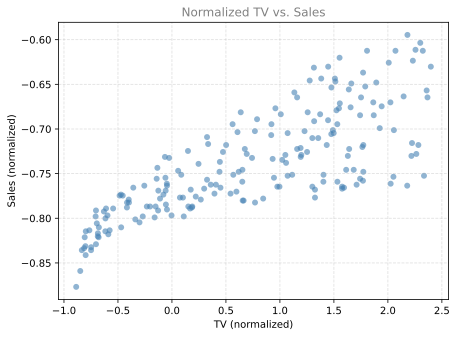
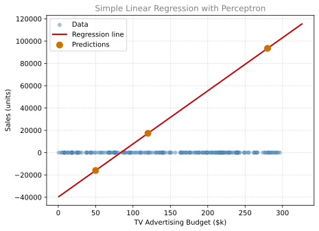
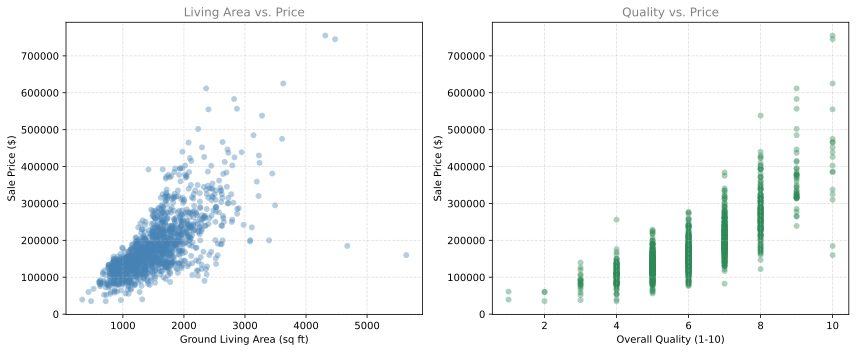

%config InlineBackend.figure_formats = ['svg']
import numpy as np
import matplotlib.pyplot as plt
import pandas as pd
# Set a seed so that our results are reproducible.
np.random.seed(3)Lab: Regression with a Perceptron
calculus
In this lab, we will put the optimization ideas from calculus (derivatives, gradient descent, loss functions) into practice by implementing a neural network from scratch. We will start with the simplest possible case, a single perceptron doing simple linear regression, and then extend it to multiple inputs. This lab is a companion to the Optimization in Neural Networks theory page.
Part 1. Simple Linear Regression (TV Advertising → Sales)
Loading and Exploring Data
We will use a Kaggle dataset that tracks how much a company spent on TV advertising (in thousands of dollars) and how many units it sold. Our goal is to predict sales from the TV budget.
path = "../../media/tvmarketing.csv"
adv = pd.read_csv(path)
adv.head()| TV | Sales | |
|---|---|---|
| 0 | 230.1 | 22.1 |
| 1 | 44.5 | 10.4 |
| 2 | 17.2 | 9.3 |
| 3 | 151.5 | 18.5 |
| 4 | 180.8 | 12.9 |
A scatter plot reveals that there is a positive relationship between TV spending and sales.
fig, ax = plt.subplots()
ax.scatter(adv["TV"], adv["Sales"], color="#4682B4", alpha=0.6, edgecolors="none")
ax.set_xlabel("TV Advertising Budget ($k)")
ax.set_ylabel("Sales (units)")
ax.set_title("TV Advertising vs. Sales", fontsize=12, color="gray")
ax.grid(linestyle="--", alpha=0.4)
plt.show()
Normalizing Data
Neural networks train more efficiently when feature values are on similar scales. We normalize each column by subtracting its mean and dividing by its standard deviation. This is called z-score normalization (sometimes called standardization). After normalization, each feature has a mean of 0 and a standard deviation of 1.
adv_norm = (adv - np.mean(adv)) / np.std(adv)Here is the same scatter plot after normalization. Notice that the shape is identical, but the axis values have changed.
fig, ax = plt.subplots()
ax.scatter(adv_norm["TV"], adv_norm["Sales"], color="#4682B4", alpha=0.6, edgecolors="none")
ax.set_xlabel("TV (normalized)")
ax.set_ylabel("Sales (normalized)")
ax.set_title("Normalized TV vs. Sales", fontsize=12, color="gray")
ax.grid(linestyle="--", alpha=0.4)
plt.show()
Reshape the data into row vectors (shape \(1 \times m\)) as required by our neural network.
X_norm = adv_norm["TV"]
Y_norm = adv_norm["Sales"]
X_norm = np.array(X_norm).reshape((1, len(X_norm)))
Y_norm = np.array(Y_norm).reshape((1, len(Y_norm)))
print("Shape of X_norm:", X_norm.shape)
print("Shape of Y_norm:", Y_norm.shape)
print(f"We have m = {X_norm.shape[1]} training examples.")Shape of X_norm: (1, 200)
Shape of Y_norm: (1, 200)
We have m = 200 training examples.Defining Neural Network Structure
We define a helper function that returns the size of the input layer (\(n_x\)) and the output layer (\(n_y\)) based on the shapes of our data arrays.
def layer_sizes(X, Y):
"""
Arguments:
X -- input dataset of shape (input size, number of examples)
Y -- labels of shape (output size, number of examples)
Returns:
n_x -- the size of the input layer
n_y -- the size of the output layer
"""
n_x = X.shape[0]
n_y = Y.shape[0]
return (n_x, n_y)
(n_x, n_y) = layer_sizes(X_norm, Y_norm)
print("Size of input layer: n_x =", n_x)
print("Size of output layer: n_y =", n_y)Size of input layer: n_x = 1
Size of output layer: n_y = 1Initializing Parameters
We initialize the weight matrix \(W\) with small random values and the bias vector \(b\) with zeros. The shapes are determined by the layer sizes.
def initialize_parameters(n_x, n_y):
"""
Returns:
parameters -- dictionary containing:
W -- weight matrix of shape (n_y, n_x)
b -- bias vector of shape (n_y, 1)
"""
W = np.random.randn(n_y, n_x) * 0.01
b = np.zeros((n_y, 1))
parameters = {"W": W, "b": b}
return parameters
parameters = initialize_parameters(n_x, n_y)
print("W =", parameters["W"])
print("b =", parameters["b"])W = [[0.01788628]]
b = [[0.]]Forward Propagation
Forward propagation computes the predicted output. For a single perceptron with no activation function, this is simply a linear combination.
\[Z = WX + b\] \[\hat{Y} = Z\]
def forward_propagation(X, parameters):
"""
Arguments:
X -- input data of size (n_x, m)
parameters -- dictionary with W and b
Returns:
Y_hat -- predicted output of shape (n_y, m)
"""
W = parameters["W"]
b = parameters["b"]
Z = np.matmul(W, X) + b
Y_hat = Z
return Y_hat
Y_hat = forward_propagation(X_norm, parameters)
print("First 5 predictions:", Y_hat[0, 0:5])First 5 predictions: [ 0.02971687 -0.00715913 -0.01258324 0.0141002 0.01992168]Computing Cost (Mean Squared Error)
The cost function measures how far our predictions are from the true values. We use the sum of squares cost (also called MSE with a \(\frac{1}{2}\) factor for cleaner derivatives).
\[\mathcal{L}(w, b) = \frac{1}{2m}\sum_{i=1}^{m}(\hat{y}^{(i)} - y^{(i)})^2\]
def compute_cost(Y_hat, Y):
"""
Computes the cost function as a sum of squares.
Arguments:
Y_hat -- predicted output of shape (n_y, m)
Y -- true labels of shape (n_y, m)
Returns:
cost -- sum of squares scaled by 1/(2*m)
"""
m = Y_hat.shape[1]
cost = np.sum((Y_hat - Y)**2) / (2 * m)
return cost
print("Initial cost:", compute_cost(Y_hat, Y_norm))Initial cost: 0.2838167376532077Backward Propagation
This is where the calculus from the theory section becomes code. We compute the partial derivatives of the cost function with respect to \(W\) and \(b\).
\[\frac{\partial \mathcal{L}}{\partial W} = \frac{1}{m}(\hat{Y} - Y)X^T\]
\[\frac{\partial \mathcal{L}}{\partial b} = \frac{1}{m}\sum_{i=1}^{m}(\hat{y}^{(i)} - y^{(i)})\]
def backward_propagation(Y_hat, X, Y):
"""
Computes gradients for W and b.
Arguments:
Y_hat -- predicted output of shape (n_y, m)
X -- input data of shape (n_x, m)
Y -- true labels of shape (n_y, m)
Returns:
grads -- dictionary with dW and db
"""
m = X.shape[1]
dZ = Y_hat - Y
dW = (1 / m) * np.dot(dZ, X.T)
db = (1 / m) * np.sum(dZ, axis=1, keepdims=True)
grads = {"dW": dW, "db": db}
return grads
grads = backward_propagation(Y_hat, X_norm, Y_norm)
print("dW =", grads["dW"])
print("db =", grads["db"])dW = [[0.52877009]]
db = [[0.75202439]]Updating Parameters
Using gradient descent, we update the parameters by stepping in the direction opposite to the gradient.
\[W = W - \alpha \frac{\partial \mathcal{L}}{\partial W}\]
\[b = b - \alpha \frac{\partial \mathcal{L}}{\partial b}\]
Here, \(\alpha\) is the learning rate, which controls the size of each update step.
def update_parameters(parameters, grads, learning_rate=1.2):
"""
Updates parameters using gradient descent.
Arguments:
parameters -- dictionary with W and b
grads -- dictionary with dW and db
learning_rate -- step size for gradient descent
Returns:
parameters -- dictionary with updated W and b
"""
W = parameters["W"]
b = parameters["b"]
dW = grads["dW"]
db = grads["db"]
W = W - learning_rate * dW
b = b - learning_rate * db
parameters = {"W": W, "b": b}
return parameters
parameters_updated = update_parameters(parameters, grads)
print("W updated =", parameters_updated["W"])
print("b updated =", parameters_updated["b"])W updated = [[-0.61663782]]
b updated = [[-0.90242926]]Putting It All Together
The nn_model() function integrates all steps (structure definition, initialization, and the training loop) into a single callable unit.
def nn_model(X, Y, num_iterations=10, learning_rate=1.2, print_cost=False):
"""
Builds and trains a single-perceptron neural network.
Arguments:
X -- input data of shape (n_x, m)
Y -- true labels of shape (n_y, m)
num_iterations -- number of gradient descent iterations
learning_rate -- step size for parameter updates
print_cost -- if True, print cost every iteration
Returns:
parameters -- learned W and b
"""
n_x = layer_sizes(X, Y)[0]
n_y = layer_sizes(X, Y)[1]
parameters = initialize_parameters(n_x, n_y)
for i in range(0, num_iterations):
# Forward propagation
Y_hat = forward_propagation(X, parameters)
# Compute cost
cost = compute_cost(Y_hat, Y)
# Backward propagation
grads = backward_propagation(Y_hat, X, Y)
# Update parameters
parameters = update_parameters(parameters, grads, learning_rate)
if print_cost:
print(f"Cost after iteration {i}: {cost:.6f}")
return parametersTraining and Observing Cost Decrease
parameters_simple = nn_model(X_norm, Y_norm, num_iterations=30, learning_rate=1.2, print_cost=True)
print("W =", parameters_simple["W"])
print("b =", parameters_simple["b"])Cost after iteration 0: 0.276800
Cost after iteration 1: 0.374162
Cost after iteration 2: 0.695499
Cost after iteration 3: 1.350323
Cost after iteration 4: 2.634723
Cost after iteration 5: 5.144019
Cost after iteration 6: 10.044289
Cost after iteration 7: 19.613330
Cost after iteration 8: 38.299266
Cost after iteration 9: 74.788187
Cost after iteration 10: 146.041846
Cost after iteration 11: 285.182267
Cost after iteration 12: 556.888413
Cost after iteration 13: 1087.461977
Cost after iteration 14: 2123.538312
Cost after iteration 15: 4146.734043
Cost after iteration 16: 8097.524955
Cost after iteration 17: 15812.423019
Cost after iteration 18: 30877.672858
Cost after iteration 19: 60296.305585
Cost after iteration 20: 117743.474455
Cost after iteration 21: 229923.304219
Cost after iteration 22: 448982.214404
Cost after iteration 23: 876749.008418
Cost after iteration 24: 1712069.653021
Cost after iteration 25: 3343240.162424
Cost after iteration 26: 6528504.704779
Cost after iteration 27: 12748522.873507
Cost after iteration 28: 24894649.358405
Cost after iteration 29: 48612970.524870
W = [[7834.69494976]]
b = [[5800.0727459]]Notice how the cost decreases rapidly in the first few iterations and then plateaus. This means the model has converged, meaning further iterations will not improve the fit significantly.
Making Predictions and Plotting
We build a prediction function that handles normalization and denormalization. This allows us to feed in raw (un-normalized) values and get predictions in the original units.
def predict(X, Y, parameters, X_pred):
"""
Makes predictions using the trained model, handling normalization.
Arguments:
X -- original training inputs (pandas Series or DataFrame)
Y -- original training labels (pandas Series)
parameters -- trained W and b
X_pred -- new input values to predict on
Returns:
Y_pred -- predictions in original scale
"""
W = parameters["W"]
b = parameters["b"]
if isinstance(X, pd.Series):
X_mean = np.mean(X)
X_std = np.std(X)
X_pred_norm = ((X_pred - X_mean) / X_std).reshape((1, len(X_pred)))
else:
X_mean = np.array(X.mean()).reshape((X.shape[1], 1))
X_std = np.array(X.std(ddof=0)).reshape((X.shape[1], 1))
X_pred_norm = (X_pred - X_mean) / X_std
Y_pred_norm = np.matmul(W, X_pred_norm) + b
Y_pred = Y_pred_norm * np.std(Y) + np.mean(Y)
return Y_pred[0]X_pred = np.array([50, 120, 280])
Y_pred = predict(adv["TV"], adv["Sales"], parameters_simple, X_pred)
print(f"TV marketing expenses: {X_pred}")
print(f"Predicted sales: {Y_pred}")TV marketing expenses: [ 50 120 280]
Predicted sales: [-16004.26954828 17324.34375303 93504.03129886]Now we can visualize the regression line alongside the original data.
fig, ax = plt.subplots()
ax.scatter(adv["TV"], adv["Sales"], color="#4682B4", alpha=0.5, edgecolors="none", label="Data")
X_line = np.arange(np.min(adv["TV"]), np.max(adv["TV"]) * 1.1, 0.1)
Y_line = predict(adv["TV"], adv["Sales"], parameters_simple, X_line)
ax.plot(X_line, Y_line, color="#CC0000", linewidth=2, label="Regression line")
ax.scatter(X_pred, Y_pred, color="#CC7000", s=80, zorder=5, label="Predictions")
ax.set_xlabel("TV Advertising Budget ($k)")
ax.set_ylabel("Sales (units)")
ax.set_title("Simple Linear Regression with Perceptron", fontsize=12, color="gray")
ax.legend()
ax.grid(linestyle="--", alpha=0.4)
plt.show()
Part 2. Multiple Linear Regression (House Size + Quality → Price)
Now we will extend our single-perceptron model to handle two input features. The beauty of our implementation is that we do not need to change the forward propagation, backward propagation, or parameter update code at all. The matrix operations generalize naturally.
Loading House Prices Data
We use the Kaggle House Prices dataset. From it, we select two features to predict sale price.
- GrLivArea (above grade living area, in square feet)
- OverallQual (overall quality rating from 1 to 10)
df = pd.read_csv("../../media/house_prices_train.csv")
X_multi = df[["GrLivArea", "OverallQual"]]
Y_multi = df["SalePrice"]display(X_multi.head())
display(Y_multi.head())| GrLivArea | OverallQual | |
|---|---|---|
| 0 | 1710 | 7 |
| 1 | 1262 | 6 |
| 2 | 1786 | 7 |
| 3 | 1717 | 7 |
| 4 | 2198 | 8 |
0 208500
1 181500
2 223500
3 140000
4 250000
Name: SalePrice, dtype: int64Before training, it helps to visualize the relationship between each feature and the target variable.
fig, axes = plt.subplots(1, 2, figsize=(12, 5))
axes[0].scatter(X_multi["GrLivArea"], Y_multi, color="#4682B4", alpha=0.4, edgecolors="none")
axes[0].set_xlabel("Ground Living Area (sq ft)")
axes[0].set_ylabel("Sale Price ($)")
axes[0].set_title("Living Area vs. Price", fontsize=12, color="gray")
axes[0].grid(linestyle="--", alpha=0.4)
axes[1].scatter(X_multi["OverallQual"], Y_multi, color="#2E8B57", alpha=0.4, edgecolors="none")
axes[1].set_xlabel("Overall Quality (1-10)")
axes[1].set_ylabel("Sale Price ($)")
axes[1].set_title("Quality vs. Price", fontsize=12, color="gray")
axes[1].grid(linestyle="--", alpha=0.4)
plt.tight_layout()
plt.show()
Both plots show a clear positive relationship. Larger houses and higher quality ratings both correlate with higher prices. This confirms that these two features are good candidates for our model.
Normalizing Data
Just like before, we normalize each column to have mean 0 and standard deviation 1.
X_multi_norm = (X_multi - X_multi.mean()) / X_multi.std(ddof=0)
Y_multi_norm = (Y_multi - Y_multi.mean()) / Y_multi.std(ddof=0)We reshape the data so that \(X\) has shape \((2, m)\) and \(Y\) has shape \((1, m)\).
X_multi_norm = np.array(X_multi_norm).T
Y_multi_norm = np.array(Y_multi_norm).reshape((1, len(Y_multi_norm)))
print("Shape of X:", X_multi_norm.shape)
print("Shape of Y:", Y_multi_norm.shape)
print(f"We have m = {X_multi_norm.shape[1]} training examples.")Shape of X: (2, 1460)
Shape of Y: (1, 1460)
We have m = 1460 training examples.Training with 2 Input Nodes
We pass the new data directly to nn_model(). Because the input shape is \((2, m)\) instead of \((1, m)\), layer_sizes() will automatically set \(n_x = 2\). Everything else works exactly the same.
parameters_multi = nn_model(X_multi_norm, Y_multi_norm, num_iterations=100, learning_rate=1.2, print_cost=True)
print("W =", parameters_multi["W"])
print("b =", parameters_multi["b"])Cost after iteration 0: 0.514220
Cost after iteration 1: 0.448627
Cost after iteration 2: 0.396224
Cost after iteration 3: 0.353227
Cost after iteration 4: 0.317639
Cost after iteration 5: 0.288102
Cost after iteration 6: 0.263566
Cost after iteration 7: 0.243179
Cost after iteration 8: 0.226237
Cost after iteration 9: 0.212158
Cost after iteration 10: 0.200457
Cost after iteration 11: 0.190734
Cost after iteration 12: 0.182654
Cost after iteration 13: 0.175939
Cost after iteration 14: 0.170359
Cost after iteration 15: 0.165721
Cost after iteration 16: 0.161867
Cost after iteration 17: 0.158665
Cost after iteration 18: 0.156003
Cost after iteration 19: 0.153792
Cost after iteration 20: 0.151953
Cost after iteration 21: 0.150426
Cost after iteration 22: 0.149157
Cost after iteration 23: 0.148102
Cost after iteration 24: 0.147225
Cost after iteration 25: 0.146496
Cost after iteration 26: 0.145891
Cost after iteration 27: 0.145388
Cost after iteration 28: 0.144970
Cost after iteration 29: 0.144622
Cost after iteration 30: 0.144334
Cost after iteration 31: 0.144094
Cost after iteration 32: 0.143894
Cost after iteration 33: 0.143728
Cost after iteration 34: 0.143591
Cost after iteration 35: 0.143476
Cost after iteration 36: 0.143381
Cost after iteration 37: 0.143302
Cost after iteration 38: 0.143236
Cost after iteration 39: 0.143182
Cost after iteration 40: 0.143136
Cost after iteration 41: 0.143099
Cost after iteration 42: 0.143067
Cost after iteration 43: 0.143041
Cost after iteration 44: 0.143020
Cost after iteration 45: 0.143002
Cost after iteration 46: 0.142987
Cost after iteration 47: 0.142974
Cost after iteration 48: 0.142964
Cost after iteration 49: 0.142956
Cost after iteration 50: 0.142948
Cost after iteration 51: 0.142943
Cost after iteration 52: 0.142938
Cost after iteration 53: 0.142934
Cost after iteration 54: 0.142930
Cost after iteration 55: 0.142927
Cost after iteration 56: 0.142925
Cost after iteration 57: 0.142923
Cost after iteration 58: 0.142921
Cost after iteration 59: 0.142920
Cost after iteration 60: 0.142919
Cost after iteration 61: 0.142918
Cost after iteration 62: 0.142917
Cost after iteration 63: 0.142917
Cost after iteration 64: 0.142916
Cost after iteration 65: 0.142916
Cost after iteration 66: 0.142915
Cost after iteration 67: 0.142915
Cost after iteration 68: 0.142915
Cost after iteration 69: 0.142914
Cost after iteration 70: 0.142914
Cost after iteration 71: 0.142914
Cost after iteration 72: 0.142914
Cost after iteration 73: 0.142914
Cost after iteration 74: 0.142914
Cost after iteration 75: 0.142914
Cost after iteration 76: 0.142914
Cost after iteration 77: 0.142914
Cost after iteration 78: 0.142914
Cost after iteration 79: 0.142914
Cost after iteration 80: 0.142914
Cost after iteration 81: 0.142914
Cost after iteration 82: 0.142913
Cost after iteration 83: 0.142913
Cost after iteration 84: 0.142913
Cost after iteration 85: 0.142913
Cost after iteration 86: 0.142913
Cost after iteration 87: 0.142913
Cost after iteration 88: 0.142913
Cost after iteration 89: 0.142913
Cost after iteration 90: 0.142913
Cost after iteration 91: 0.142913
Cost after iteration 92: 0.142913
Cost after iteration 93: 0.142913
Cost after iteration 94: 0.142913
Cost after iteration 95: 0.142913
Cost after iteration 96: 0.142913
Cost after iteration 97: 0.142913
Cost after iteration 98: 0.142913
Cost after iteration 99: 0.142913
W = [[0.3694604 0.57181575]]
b = [[1.12421488e-16]]The weight vector \(W\) now has two components. The first weight corresponds to GrLivArea and the second to OverallQual. Notice that OverallQual has a larger weight, which makes sense because overall quality is a strong predictor of price.
Making Predictions and Evaluating
X_pred_multi = np.array([[1710, 7], [1200, 6], [2200, 8]]).T
Y_pred_multi = predict(X_multi, Y_multi, parameters_multi, X_pred_multi)
print(f"Ground living area (sq ft): {X_pred_multi[0]}")
print(f"Overall quality (1-10): {X_pred_multi[1]}")
print(f"Predicted sale price ($): {np.round(Y_pred_multi)}")Ground living area (sq ft): [1710 1200 2200]
Overall quality (1-10): [7 6 8]
Predicted sale price ($): [221371. 160039. 281587.]These predictions align with intuition. A larger house with higher quality commands a higher price.
We did it. With a single perceptron and gradient descent, we built both a simple linear regression model and a multiple linear regression model. The key insight is that the same mathematical framework (forward propagation → cost → backward propagation → update) scales naturally from one input to many inputs, thanks to linear algebra.